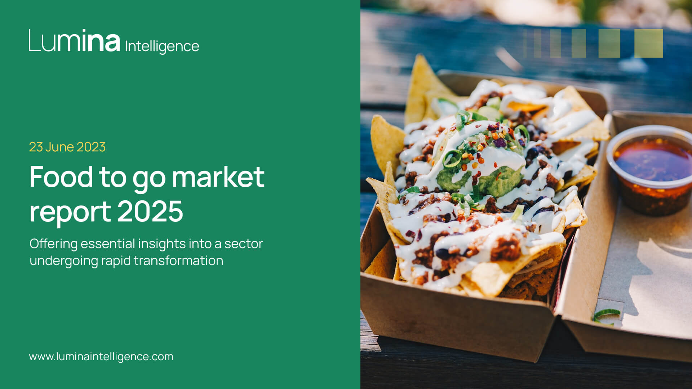

Where They Were
Lumina Intelligence was struggling with a split identity and lack of cohesion. One side of the business focused on food and drink, the other on nutrition. They were using different brand colours, fonts, messaging and visuals. It wasn’t clear to users what the brand actually stood for, and internally, the team was finding it hard to keep things consistent.
Colour Palette
To begin, I led a deep dive into the visual identities of Lumina’s competitors and adjacent brands in the market. My research explored colour usage in both the consumer-facing and scientific ends of the industry, identifying themes, gaps, and opportunities.
I presented these insights to the internal teams and we collaboratively refined the direction until we landed on a core colour palette that felt energetic yet credible. It captured the bright, forward-thinking nature of food and drink innovation, while still appealing to the analytical, data-led mindset of nutrition professionals.
To take this further, I developed a dedicated data colour palette specifically designed for use in charts and presentations, and with a priority on accessibility, especially in terms of colour contrast. This ensured the new palette not only looked great but was also highly functional for Lumina’s insight-heavy deliverables.
Fonts
Typography was another key part of this refresh. Lumina Intelligence needed a typeface that felt fresh and modern, but also versatile enough to perform across print, digital, and data-driven materials. After exploring a range of Serif and Sans Serif options and reviewing what similar brands were using, I presented a set of recommendations.
The final choice was Manrope, a clean, modern sans serif that aligned beautifully with the brand’s tone and proved especially effective across presentations, infographics, and dense data displays. It offered the right balance of professionalism and contemporary clarity.

Logos
While the overall identity was getting a facelift, the core Lumina Intelligence logo was to remain as is - a decision to preserve brand recognition. However, I adapted the logo using the newly selected Manrope font, creating a refreshed version that subtly modernised its feel while keeping the brand’s essence intact.
Visual Mark
To further build out the brand’s toolkit, I created a new visual mark that embodies Lumina Intelligence’s focus on insight and growth. It was developed to be flexible for use across reports, digital assets, and social media, and was designed to leave a strong visual impression without overpowering the content. The mark complements the primary logo and enhances the recognisability of the brand across multiple touchpoints.
Brand Assets & Visuals
To complete the rollout, I produced a comprehensive suite of branded materials, including updated PowerPoint templates for reports and events, full brand guidelines, digital display banners, and a series of social media assets. These tools empower Lumina’s internal teams to consistently apply the refreshed brand across all channels, from client-facing decks to promotional campaigns.